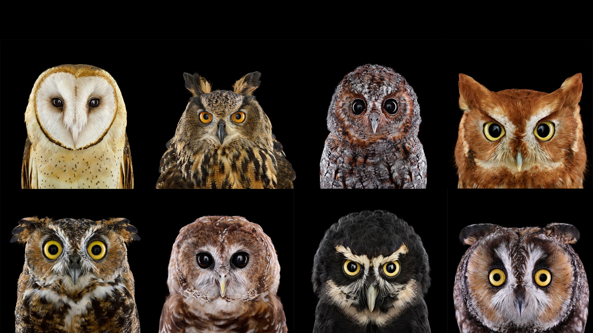

Owls are awesome
Flying almost silently and equipped with superior hearing, owls hunt mostly by night. They prey on creatures from rodents to other birds of prey. Some are especially fond of roosting in barn attics, which has earned them the monicker of barn owls. Farmers have often found that roosting owls make quick work of any vermin in their barn and fields. Some even build roosts in the top their barns, intending to attract owls to roost there. Other species have stayed away from human contact, and some remain little known to this day. And they are all absolutely adorable.
owls are:
- badass hunters
- superior exterminators
- cute